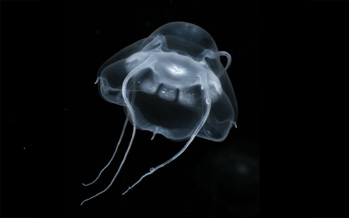
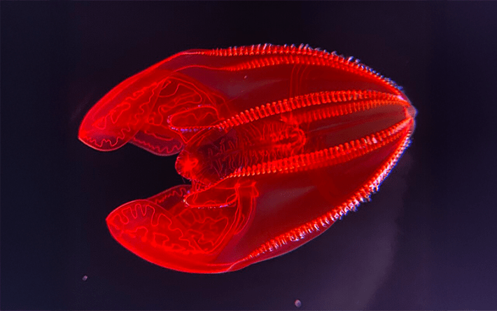
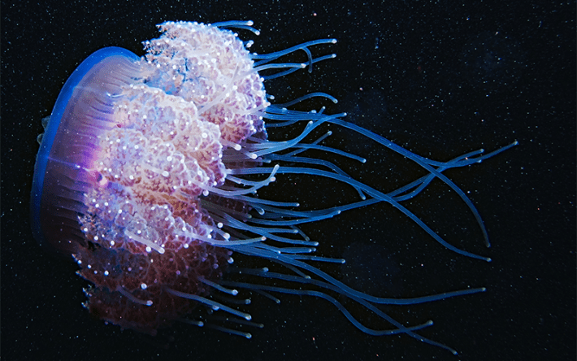
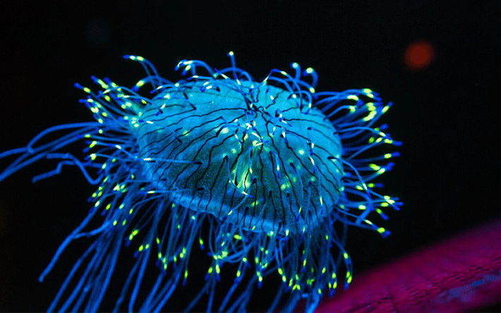
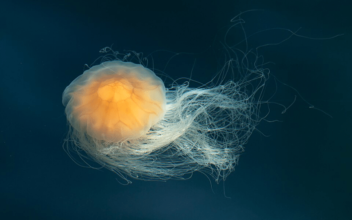

Today, we celebrate jellyfish—creatures that have persisted for more than 500 million years and are older than dinosaurs. There are more than 200 recorded species of true jellyfish, and they can be found throughout the depths of all the Earth’s oceans. Species vary widely in size, spanning between a centimeter and over 6 feet long. These enchanting blobs are about 95 percent water, and they may thrive as climate change intensifies: these hardy animals can endure high water temperatures and low oxygen levels, for example, and their competition for resources may continue to dwindle. But jellyfish can also benefit their environments, shuttling carbon to the deep ocean and carrying around nutrients.
In honor of World Jellyfish Day, feast your eyes on some dazzling jelly species:

Photo by Kevin Raskoff / Wikipedia.
Bathykorus bouilloni, a relatively newly identified species that was first described in 2010, was found between around 4,600 and 6,500 feet deep in the Arctic Ocean. B. bouilloni is quite fragile, so this creature may have been crushed by nets and gone unrecognized in past surveys.

Photo by Ryan Schwark / Wikipedia.
Lampocteis cruentiventer, or the bloody-belly comb jelly, might look stunningly vibrant to us—but deep in the North Pacific ocean, it’s almost invisible to predators.

Photo by Derek Keats / Wikimedia Commons.
Cephea cephea, also known as the crown or cauliflower jelly, has some 30 “spikes” that jut out of its circular body. It lives in the Indo-Pacific, and has a diameter of up to 24 inches.

Photo by Chris Favero / Wikipedia.
This might look like a cap donned at a rave, but it’s actually Olindias formosus—the flower hat jelly. These nocturnal wigglers hover on or around the sea bottom during the day, and they’re spotted off of Argentina, Brazil, and southern Japan.

Photo by W. Carter / Wikimedia Commons.
This is one big jelly: The lion’s mane jelly, or Cyanea capillata, has tentacles that can span more than 100 feet long—even longer than the body of the 90-foot blue whale, the world’s biggest mammal. This species lives in the Arctic and North Pacific oceans, and the heftiest ones live in the former. 
EnjoyingNautilus? Subscribe to our free newsletter.
Lead image: Derek Keats / Wikimedia Commons